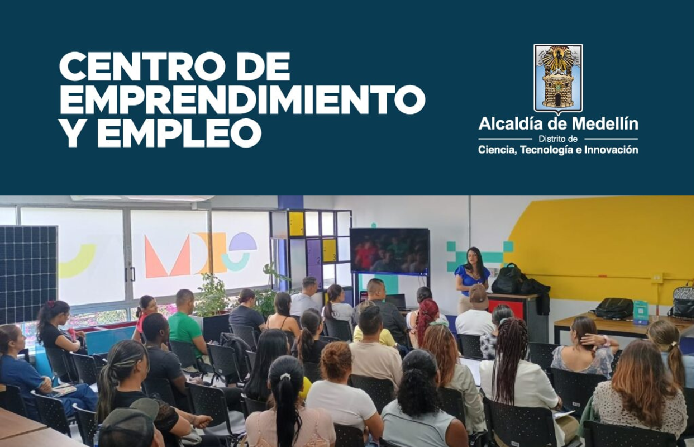
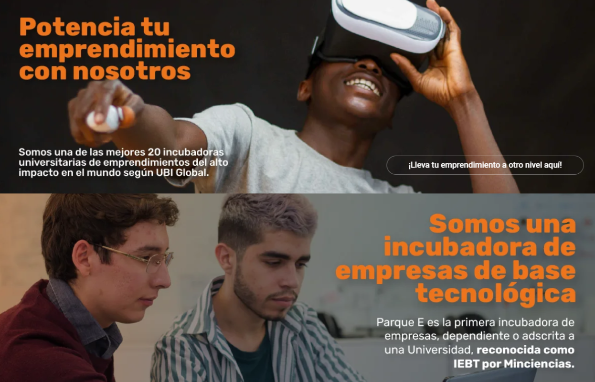
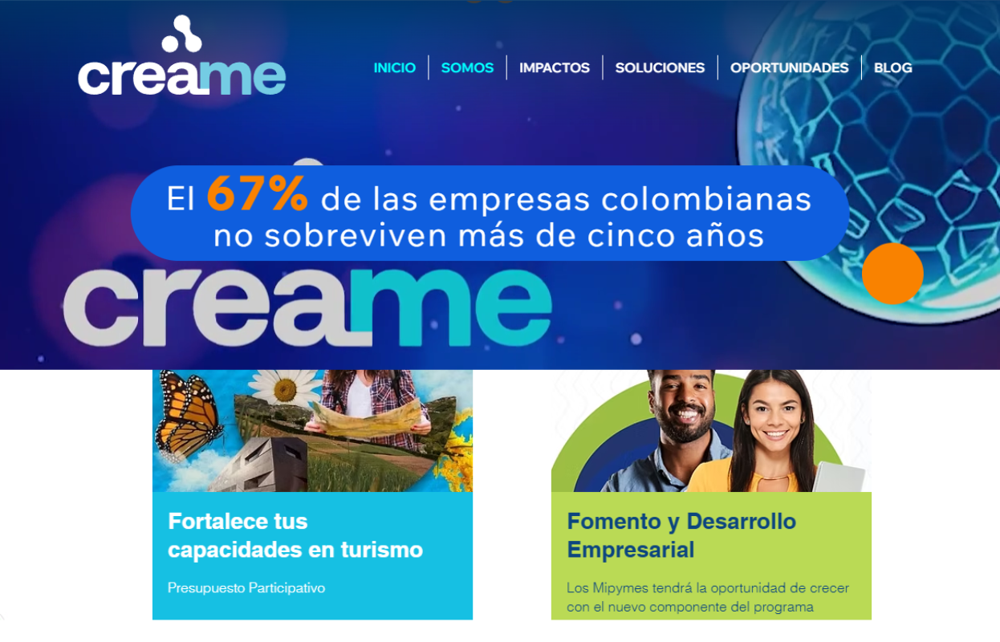
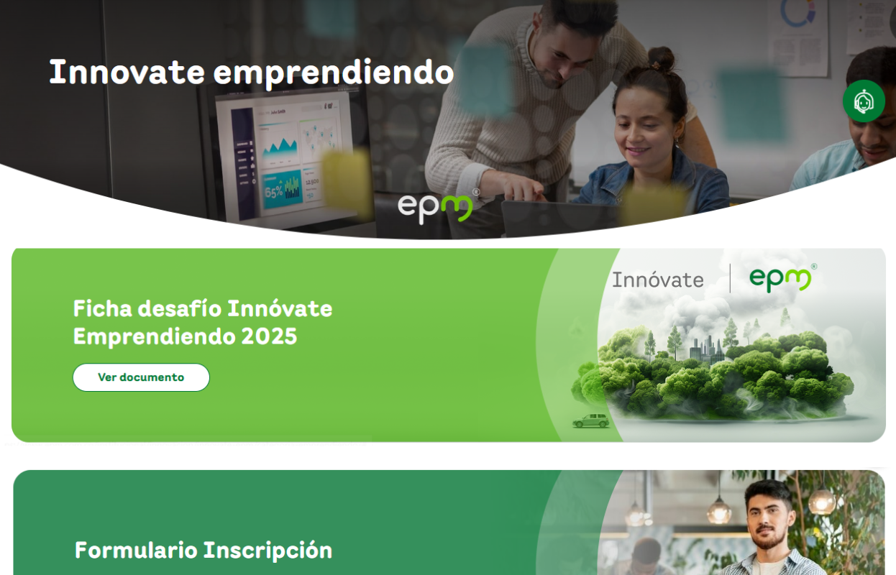
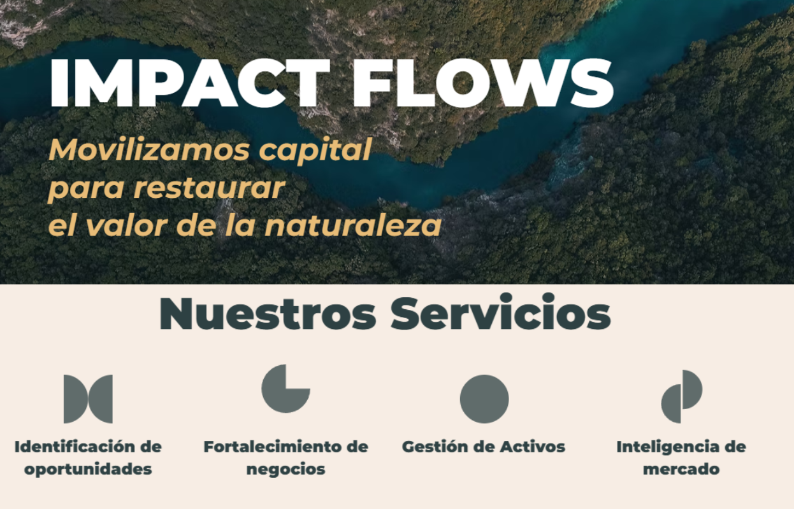
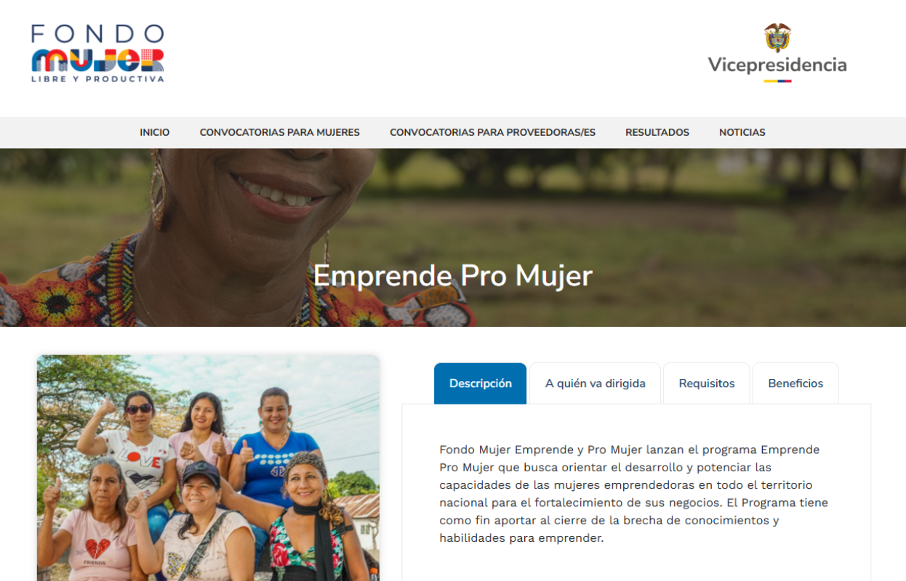
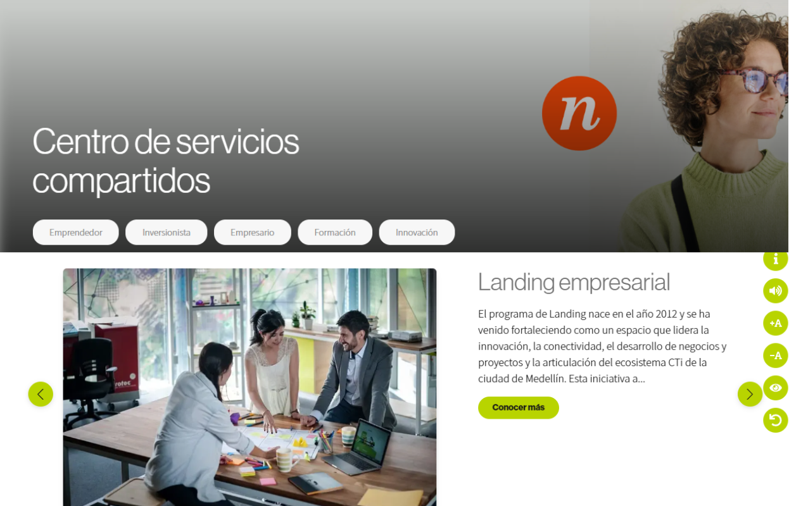
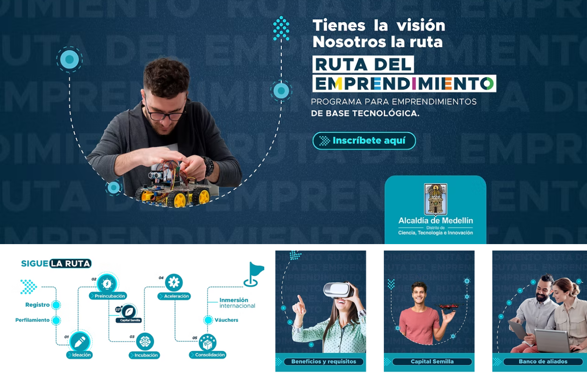

Centro de Emprendimiento y Empleo
Por medio de este programa la Alcaldía acompaña a aquellos que tienen una idea de negocio, un emprendimiento o empresa, los capacita y les forma en diversos saberes con el fin de fortalecer sus conocimientos en todas las áreas y dinámicas empresariales, buscando la disminución de brechas, sostenibilidad de sus iniciativas productivas y finalmente una mejor calidad de vida.
Parque del Emprendimiento
Encuentra información de como Parque del Emprendimiento estructura e impulsa emprendimientos con alto impacto, para iniciativas de base tecnológica y base de conocimiento, con potencial de crecimiento. Conoce cómo puedes innovar con ellos de acuerdo a tu perfil.
Creame
Conoce una incubadora y aceleradora de empresas que potencia el desarrollo económico del país a través del acompañamiento integral y la transformación empresarial. Cuenta con más de 29 años de experiencia en el mercado desarrollando herramientas, metodologías y modelos propios que garantizan el éxito de las empresas que acompañan.
Innóvate Emprendiendo 2025
Innóvate Grupo EPM, es un espacio dispuesto para vivir una inmersión de conocimiento, experiencias e ideas que aportan a la construcción de un mundo sostenible e innovador. Allí, se convoca a Instituciones de Educación Superior de la ciudad de Medellín, Área Metropolitana del Valle de Aburrá (AMVA) y ciudades del área de influencia del Grupo EPM a nivel Nacional e Internacional y colaboradores del Grupo EPM, para que presenten propuestas innovadoras y útiles para la sociedad.
Canoa Impact Flows
Conoce a Canoa, una iniciativa que estructura oportunidades de inversión en negocios basados en la naturaleza, asegurando que sean financieramente viables, escalables y alineadas con criterios de impacto ambiental y social. A través de modelos innovadores de financiamiento, facilitan el desarrollo de soluciones que regeneran ecosistemas estratégicos y crean valor sostenible a largo plazo.
Fondo Mujer
Fondo Mujer Emprende y Pro Mujer lanzan el programa Emprende Pro Mujer que busca orientar el desarrollo y potenciar las capacidades de las mujeres emprendedoras en todo el territorio nacional para el fortalecimiento de sus negocios. El Programa tiene como fin aportar al cierre de la brecha de conocimientos y habilidades para emprender.
Centro de Recursos Compartidos - Ruta N
¿Tu startup está creciendo, pero le faltan manos para tareas cotidianas o transversales? Ruta N lanza el Centro de Servicios Compartidos, un programa que fortalece startups de Medellín brindándoles apoyo en áreas operativas para que puedas enfocarte en lo estratégico.
Ruta del Emprendimiento
Si estás en algunas de las 16 comunas y 5 corregimientos del Distrito de Ciencia, Tecnología e Innovación de Medellín y tienes una idea, un emprendimiento o una empresa de base tecnológica, aquí encuentras el apoyo que necesitas para hacerla crecer. Te conectamos con herramientas, aliados y oportunidades diseñadas para cada etapa de tu emprendimiento o empresa.